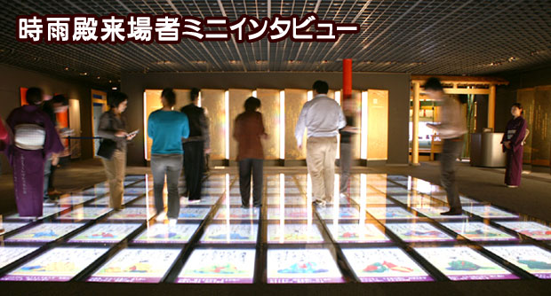
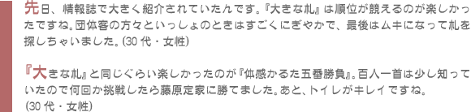
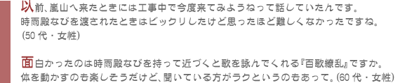
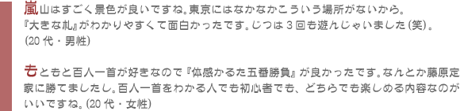
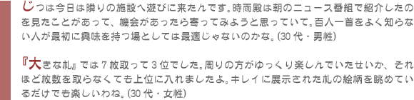
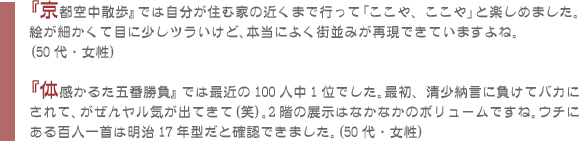

|  |
時雨殿に訪れた方へアトラクションを堪能したあとにお話を聞いてみました。当日はじつにさまざまな年齢層の方が来ていましたよ。その中のコメントをいくつか紹介させていただきます。 |
|  |
|  |
Ｎ.Ｏ.Ｍ： 任天堂が、かつて任天堂骨稗という社名でかるたや花札をメインに販売していた頃から御存知の京都市内にお住まいの方々です。百人一首の愛好者には『百歌繚乱』の人気が高かったですよ。 |
|  |
Ｎ.Ｏ.Ｍ： 彼女のほうが京都に住んでいるカップルです。東京から遊びに来ていた彼氏は時雨殿なびと連動したアトラクションの仕組みにも興味津々のご様子。たしかにアレ、不思議ですよね？ |
|  |
Ｎ.Ｏ.Ｍ： 和歌山から来たというご夫婦です。ゲームキューブとニンテンドーＤＳユーザーで現在はお子さんと『ポケットモンスター ダイヤモンド』を楽しんでいるそうですよ。 |
|  |
Ｎ.Ｏ.Ｍ： 京都市内にお住まいの女性二人組です。小さい頃の冬の遊びといえば百人一首で、札の種類とか知らぬ間に覚えていたとか。『体感かるた五番勝負』では勝利数と札を取るまでの時間でプレイヤー同士の総合ランキングが決まるんです。 |
嵐山観光の途中に寄ったのかと思いきや、時雨殿メインで遊びに来たという女性二人組です。お子さんは『脳を鍛える大人のＤＳトレーニング』で日々鍛えているようですよ。建物にも鋭いチェックが入っています。